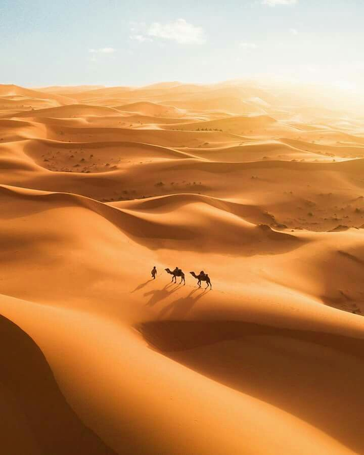
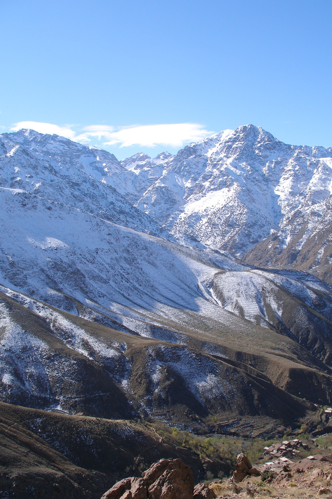
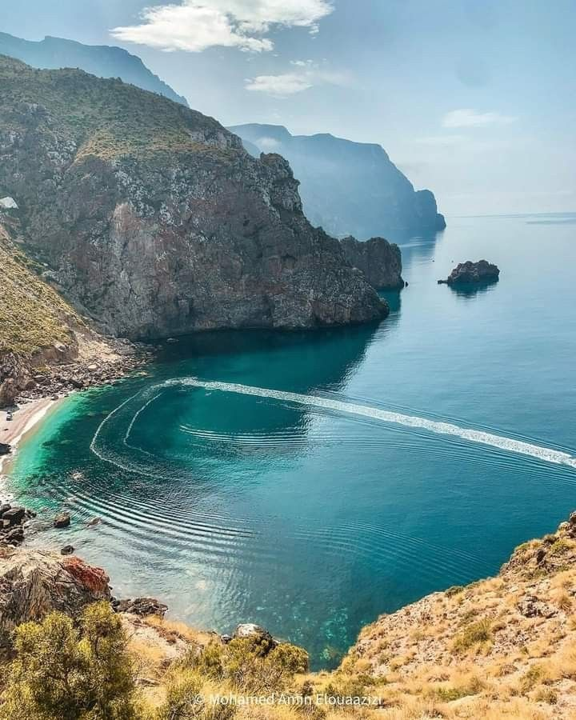

Why You’ll Love This Journey

Imperial Cities
Discover Fes, Marrakech & Meknes, rich in history, culture and architecture.

Sahara Desert
Camel ride, sunset over golden dunes, Berber music under the stars.

Atlas Mountains
Breathtaking landscapes crossing the Middle & High Atlas.

Atlantic Coast
Relax in Essaouira, a charming seaside town with artistic vibes.
 Drive through the Middle Atlas, cedar forests, then camel ride into the
Sahara at sunset.
Drive through the Middle Atlas, cedar forests, then camel ride into the
Sahara at sunset.
 Cross the High Atlas via Tizi n’Tichka pass toward vibrant Marrakech.
Cross the High Atlas via Tizi n’Tichka pass toward vibrant Marrakech.